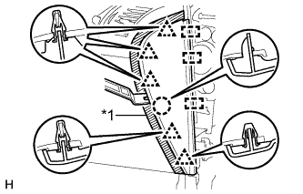

ЭБУ СИСТЕМЫ ПОМОЩИ ПРИ ПАРКОВКЕ (для моделей с правосторонним рулевым управлением) > СНЯТИЕ |
| 1. ОТСОЕДИНИТЕ ПРОВОД ОТ ОТРИЦАТЕЛЬНОГО ВЫВОДА АККУМУЛЯТОРНОЙ БАТАРЕИ |
| 2. СНИМИТЕ ОПОРНУЮ НАКЛАДКУ ПРАВОЙ ДВЕРИ В СБОРЕ |
 |
Наклейте защитную ленту вокруг опорной накладки двери.
С помощью отвертки освободите 4 фиксатора, 10 захватов и 2 направляющих и снимите опорную накладку двери.
| *1 | Защитная клейкая лента |
| 3. СНИМИТЕ БОКОВУЮ ОБЛИЦОВОЧНУЮ НАКЛАДКУ С ПРАВОЙ СТОРОНЫ КОЖУХА |
 |
Снимите фиксатор.
Освободите фиксатор и захват и снимите боковую облицовочную накладку кожуха.
| 4. СНИМИТЕ ПРАВУЮ БОКОВУЮ ПАНЕЛЬ ПРИБОРОВ |
|  |
Наклейте защитную ленту вокруг боковой панели приборов.
| *1 | Защитная клейкая лента |
С помощью съемника молдингов отцепите 5 фиксаторов, захват и 3 направляющих и снимите боковую панель приборов.
| 5. СНИМИТЕ НИЖНЮЮ ОТДЕЛОЧНУЮ НАКЛАДКУ ПАНЕЛИ ПРИБОРОВ В СБОРЕ |
 |
Освободите 4 фиксатора.
Отсоедините все разъемы и снимите отделочную накладку панели приборов.
| 6. СНИМИТЕ ОБЛИЦОВКУ ОТДЕЛОЧНОЙ НАКЛАДКИ ПАНЕЛИ ПРИБОРОВ |
 |
Освободите 4 фиксатора.
Отсоедините все разъемы и снимите облицовку отделочной накладки панели приборов.
| 7. СНИМИТЕ НИЖНЮЮ КРЫШКУ ПАНЕЛИ ПРИБОРОВ № 2 В СБОРЕ |
Введите в зацепление 3 фиксатора и 2 направляющих, чтобы установить нижнюю крышку панели приборов № 2.
Вверните винт.

| *A | Для моделей с левосторонним рулевым управлением | *B | Для моделей с правосторонним рулевым управлением |
| 8. СНИМИТЕ НИЖНЮЮ ОТДЕЛОЧНУЮ НАКЛАДКУ ПАНЕЛИ ПРИБОРОВ В СБОРЕ |
С помощью отвертки освободите 2 захвата и откройте крышку.
| *1 | Защитная клейкая лента |
 |
Выверните 2 болта.
Освободите 14 фиксаторов.
Отсоедините все разъемы и все кабели и снимите нижнюю отделочную накладку панели приборов.
| 9. СНИМИТЕ ПОДУШКУ БЕЗОПАСНОСТИ № 1 ДЛЯ ЗАЩИТЫ НОГ В СБОРЕ |
Отсоедините разъем.
Выверните 4 болта и снимите подушку безопасности № 1 для защиты ног.
| 10. СНИМИТЕ РАСПРЕДЕЛИТЕЛЬНЫЙ БЛОК СО СТОРОНЫ ВОДИТЕЛЯ В СБОРЕ |
 |
Отсоедините 3 разъема.
 |
Открепите 2 захвата и отсоедините 2 разъема (1), как показано на рисунке.
Отсоедините разъем (2).
 |
Выверните болт, отверните 2 гайки и отсоедините распределительный блок со стороны водителя в сборе.
Открепите захват и отсоедините разъем, как показано на рисунке.
Открепите 2 захвата и освободите защелку разъема, как показано на рисунке.
Открепите захват и отсоедините разъем, как показано на рисунке.
Снимите распределительный блок со стороны водителя в сборе.
| 11. СНИМИТЕ ЭБУ СИСТЕМЫ ПОМОЩИ ПРИ ПАРКОВКЕ |
Отсоедините 3 разъема.
Выверните 2 болта и снимите ЭБУ системы помощи при парковке.